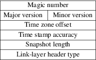
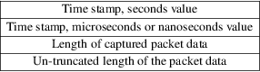

pcap-savefile − libpcap savefile format
NOTE: applications and libraries should, if possible, use libpcap to read savefiles, rather than having their own code to read savefiles. If, in the future, a new file format is supported by libpcap, applications and libraries using libpcap to read savefiles will be able to read the new format of savefiles, but applications and libraries using their own code to read savefiles will have to be changed to support the new file format.
‘‘Savefiles’’ read and written by libpcap and applications using libpcap start with a per-file header. The format of the per-file header is:

The per-file header length is 24 octets.
All fields in the per-file header are in the byte order of the host writing the file. Normally, the first field in the per-file header is a 4-byte magic number, with the value 0xa1b2c3d4. The magic number, when read by a host with the same byte order as the host that wrote the file, will have the value 0xa1b2c3d4, and, when read by a host with the opposite byte order as the host that wrote the file, will have the value 0xd4c3b2a1. That allows software reading the file to determine whether the byte order of the host that wrote the file is the same as the byte order of the host on which the file is being read, and thus whether the values in the per-file and per-packet headers need to be byte-swapped.
If the magic number has the value 0xa1b23c4d (with the two nibbles of the two lower-order bytes of the magic number swapped), which would be read as 0xa1b23c4d by a host with the same byte order as the host that wrote the file and as 0x4d3cb2a1 by a host with the opposite byte order as the host that wrote the file, the file format is the same as for regular files, except that the time stamps for packets are given in seconds and nanoseconds rather than seconds and microseconds.
Following this are:
A 2-byte file format major version number; the current version number is 2.
A 2-byte file format minor version number; the current version number is 4.
A 4-byte time zone offset; this is always 0.
A 4-byte number giving the accuracy of time stamps in the file; this is always 0.
A 4-byte number giving the "snapshot length" of the capture; packets longer than the snapshot length are truncated to the snapshot length, so that, if the snapshot length is N, only the first N bytes of a packet longer than N bytes will be saved in the capture.
a 4-byte number giving the link-layer header type for packets in the capture; see pcap-linktype(7) for the LINKTYPE_ values that can appear in this field.
Following the per-file header are zero or more packets; each packet begins with a per-packet header, which is immediately followed by the raw packet data. The format of the per-packet header is:

The per-packet header length is 16 octets.
All fields in the per-packet header are in the byte order of the host writing the file. The per-packet header begins with a time stamp giving the approximate time the packet was captured; the time stamp consists of a 4-byte value, giving the time in seconds since January 1, 1970, 00:00:00 UTC, followed by a 4-byte value, giving the time in microseconds or nanoseconds since that second, depending on the magic number in the file header. Following that are a 4-byte value giving the number of bytes of captured data that follow the per-packet header and a 4-byte value giving the number of bytes that would have been present had the packet not been truncated by the snapshot length. The two lengths will be equal if the number of bytes of packet data are less than or equal to the snapshot length.
pcap(3PCAP)